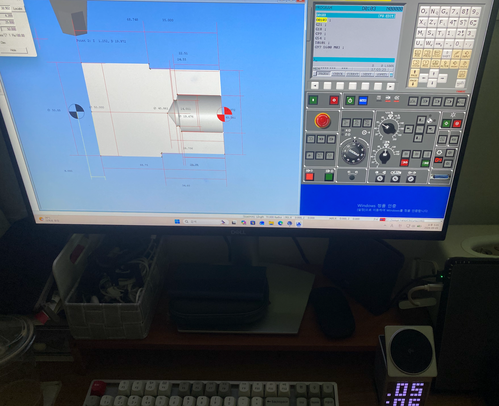

CNC / Machining Center Learning & Practice
CNC/MCT 분야에 입문하기 위해 SSCNC/FANUC 2축 시뮬레이터를 약 7~8일간 집중적으로 실습 했습니다. 기본 조작, G-code, 공작물·공구·오프셋 개념을 연습하고 마지막에는 직접 CNC 선반 프로젝트를 완성했습니다.

짧은 학습 기간이었지만 단순히 기능을 읽는 데 그치지 않고 직접 프로그램을 작성하고 가공 결과를 확인하는 방식으로 연습했습니다.
프로젝트를 통해 CNC 가공에서는 프로그램 실행뿐 아니라 도면, 좌표, 공구, 오프셋, 측정 및 오차 관리 가 중요하다는 점을 배웠습니다.
| 기본 조작 | REF/HOME, JOG, HANDLE, MDI, MEM, EDIT 등 FANUC 기본 운전 모드를 시뮬레이터에서 직접 사용했습니다. |
|---|---|
| 프로그램 | 기본 G-code의 역할을 이해하고, 간단한 CNC 선반 프로그램을 직접 작성·수정·실행해 보았습니다. |
| 공작물·공구 | 시뮬레이터에서 공작물 셋팅, 공구 호출 및 기본적인 공구·좌표·오프셋 개념을 실습했습니다. |
| 도면 | AI의 도움을 받아 기본적인 도면을 읽고 형상과 치수를 가공 순서와 연결하는 연습을 했습니다. ※ 독립적으로 복잡한 도면을 해석하는 수준은 아닙니다. |
| 알람·안전 | Reset, 정지, 비상정지 등 기본 기능을 익혔으며, 이상 발생 시 무리하게 가동을 계속하지 않고 상태를 확인하는 원칙을 배웠습니다. |
FANUC 기본 조작 · 기본 G-code · 프로그램 작성/수정 · 공작물/공구/오프셋 시뮬레이션 · CNC 선반 프로젝트
도면과 가공순서 · 좌표 · 공구 · 오프셋 · 셋팅의 기본 흐름 · 가공 후 측정과 오차 관리의 중요성
실제 장비 운전 · 실물 공작물 셋팅 · 측정공구 사용 · 실제 공구보정 · 셋팅 · 복잡한 도면해석 · CAM
현장에서만 배우는 것으로는 연습 시간이 부족할 수 있다고 생각합니다. 그래서 시뮬레이터, AI, 기술자료 등 개인 학습 도구를 함께 활용하고 있습니다.
입사 후에는 회사에서 사용하는 기계 모델, 컨트롤러, 공구와 작업방식을 기준으로 집에서도 반복 연습하며 현장에서 배운 내용을 복습하고 싶습니다.
빠르게 높은 단계로 올라가기보다 기초부터 순서대로 이해하고 실제 작업과 연결하는 것 을 중요하게 생각합니다.
장기적으로는 도면을 읽고 가공공정을 이해하며, 셋팅·가공·측정·프로그램·CAM까지 단계적으로 익힌 뒤 CNC/MCT + 산업용 로봇 + 자동화 + 생산데이터 를 함께 이해할 수 있는 생산기술 인력으로 성장하는 것이 목표입니다.